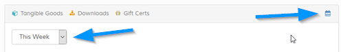
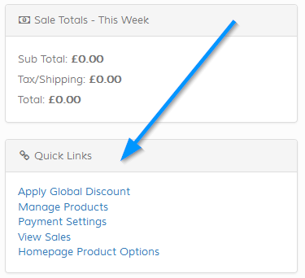

The admin homepage / dashboard is the initial screen you`ll see after login.
Sales, Account, Products Tiles
These 3 boxes / tiles are at the top of the screen. If you wish to disable these, edit the 'admin/control/defined2.php' file and the following:
define('ADMIN_HOMESCREEN_TILES', 1);
Click the and icons to add item or view current items. Note that the account
option shows the standard account count/list option ONLY, it does not include trade accounts. If you prefer to show the trade accounts instead edit
the following in the 'admin/control/defined2.php' file. Refer to notes in file.
define('ACC_TILE_PREF', 'personal');
Graph
The graph shows sales overview for tangible, downloadable and gift cert sales (if applicable). The default is 'This Week', but this can be updated
via the icon. Click this to show drop down of options as show below:

If you wish to change the initial default, edit the following in the 'admin/control/defined.php' file:
define('ADMIN_HOME_DEFAULT_SALES_VIEW', 'week');
Value must be any shown in the examples.
Search
Use the search box to quickly locate sale, account, staff or product.
Version Check
Only shown to the main admin / global staff member. Click to check if your store is up to date with the latest version of Maian Cart. If you don`t
wish to have this visible, edit the following in the 'admin/control/defined.php' file.
define('DISPLAY_SOFTWARE_VERSION_CHECK', 1);
Sales Totals
Overview of sub total, total and tax. Works in conjunction with the graph, so if you change the range for the graph the totals are
also updated.
Pending Sales / Awaiting Despatch
Shows all pending sales. If you don`t want to show this edit the following in the 'admin/control/defined.php' file:
define('SHOW_PENDING_SALES_ON_MAIN_PAGE', 1);
Last XX Completed Sales
Shows latest sales with a limit set, default on install is 10. If you don`t want to show this or want to change the limit edit the following in the 'admin/control/defined.php' file:
define('SHOW_COMPLETED_SALES_ON_MAIN_PAGE', 10);
Other Statuses
Other statuses can be shown. To do this visit the order statuses page and set the 'Display on Admin Dashboard' option
to yes for any status you want to show on the admin dashboard.
Quick Links
If enabled, will appear as an additional menu option below sales totals. See screenshot below:

To enable / edit the quick links, edit the following file:
admin/templates/system/main-quick-links.php
To enable, follow the instructions in the file. This is for advanced users only.